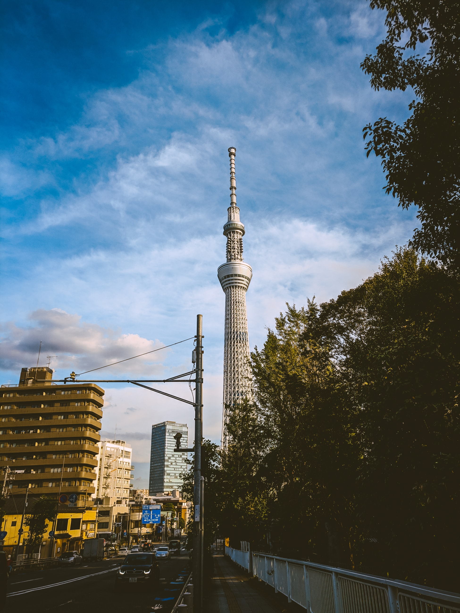

어린 시절부터 자주 밤을 새곤 했다. 부모님이 다 잠들어 고요해지면 창문을 열고 아무도 없는 거리를 느낀다. 왠지 영문을 알 수 없는 확신과 함께 나처럼 고요하기 짝이 없는 세상을 바라보는 사람이 어딘가에 또 있지 않을까, 하고 생각했다.
그 무렵 내가 자주 하던 망상은, 커다란 무대에서 노래하며 활발히 춤추는 나의 모습이었다. 그 꿈을 드러내 보이고 싶다는 생각은 눈곱만큼도 하지 않았다. 당시의 나와는 너무나도 동떨어진 상상이라 진심인지 아닌지 고민하거나 애써 지우려고 시도하지도 않았다. 그러기는커녕 특별히 마음에 담아 두지도 않았다.
그러한 상상이나 예감이 맞든 틀리든 현실을 변화시키고 미래를 만드는 힘이 될 수 있다. 상상력(imagination)과 나르시시즘(narcissism)은 다르다. 내가 어렸을 적에는 없던 말인데, 누가 '눈치 없다.'고 타박을 하고 '중2병'이라고 무시를 해도, 그런 시시한 말에 지지 말고 자꾸만 망상을 해야 한다.. 현실을 창조하는 근원은 대부분 상상력이니까.
춥다. 베란다에서 황혼을 바라보는 데도 한계가 있다. 모두가 잠들어 고요한 거리를 바라보면서 역시 깊은 밤이 좋다고 실감한다. 그 이유가 뭘까 생각을 하다가 어슴푸레하게 붉어진 동쪽 하늘을 보니 문득 가슴이 후련해진다. 이제야 그 이유를 알 것 같다.
아침이 오기 때문이다.
